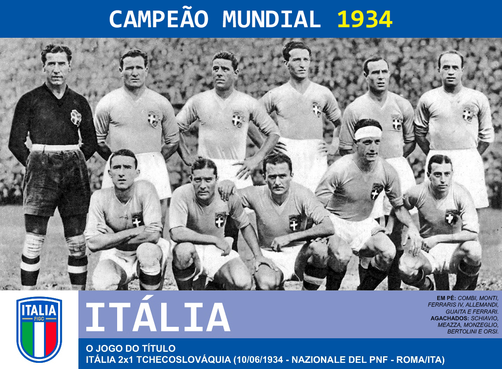

A Final da Copa do Mundo de 1934
𝘈 𝘧𝘪𝘯𝘢𝘭 𝘥𝘢 𝘊𝘰𝘱𝘢 𝘥𝘰 𝘔𝘶𝘯𝘥𝘰 𝘥𝘦 1934, 𝘥𝘪𝘴𝘱𝘶𝘵𝘢𝘥𝘢 𝘦𝘮 𝘙𝘰𝘮𝘢,
𝘧𝘰𝘪 𝘶𝘮𝘢 𝘣𝘢𝘵𝘢𝘭𝘩𝘢 𝘦𝘮𝘰𝘤𝘪𝘰𝘯𝘢𝘯𝘵𝘦 𝘦𝘯𝘵𝘳𝘦 𝘐𝘵á𝘭𝘪𝘢 𝘦
𝘛𝘤𝘩𝘦𝘤𝘰𝘴𝘭𝘰𝘷á𝘲𝘶𝘪𝘢.
𝘖𝘴 𝘵𝘤𝘩𝘦𝘤𝘰𝘴 𝘴𝘢í𝘳𝘢𝘮 𝘯𝘢 𝘧𝘳𝘦𝘯𝘵𝘦, 𝘮𝘢𝘴 𝘢 𝘐𝘵á𝘭𝘪𝘢 𝘦𝘮𝘱𝘢𝘵𝘰𝘶
𝘤𝘰𝘮 𝘖𝘳𝘴𝘪
𝘦 𝘷𝘪𝘳𝘰𝘶 𝘯𝘢 𝘱𝘳𝘰𝘳𝘳𝘰𝘨𝘢çã𝘰 𝘤𝘰𝘮 𝘚𝘤𝘩𝘪𝘢𝘷𝘪𝘰. 𝘊𝘰𝘮 𝘢 𝘷𝘪𝘵ó𝘳𝘪𝘢
𝘱𝘰𝘳 2 𝘢 1, 𝘢 𝘐𝘵á𝘭𝘪𝘢
𝘤𝘰𝘯𝘲𝘶𝘪𝘴𝘵𝘰𝘶 𝘴𝘦𝘶 𝘱𝘳𝘪𝘮𝘦𝘪𝘳𝘰 𝘵í𝘵𝘶𝘭𝘰 𝘮𝘶𝘯𝘥𝘪𝘢𝘭 𝘥𝘪𝘢𝘯𝘵𝘦 𝘥𝘦
𝘴𝘶𝘢 𝘵𝘰𝘳𝘤𝘪𝘥𝘢, 𝘦𝘮 𝘶𝘮 𝘫𝘰𝘨𝘰 𝘩𝘪𝘴𝘵ó𝘳𝘪𝘤𝘰 𝘦 𝘦𝘭𝘦𝘵𝘳𝘪𝘻𝘢𝘯𝘵𝘦.